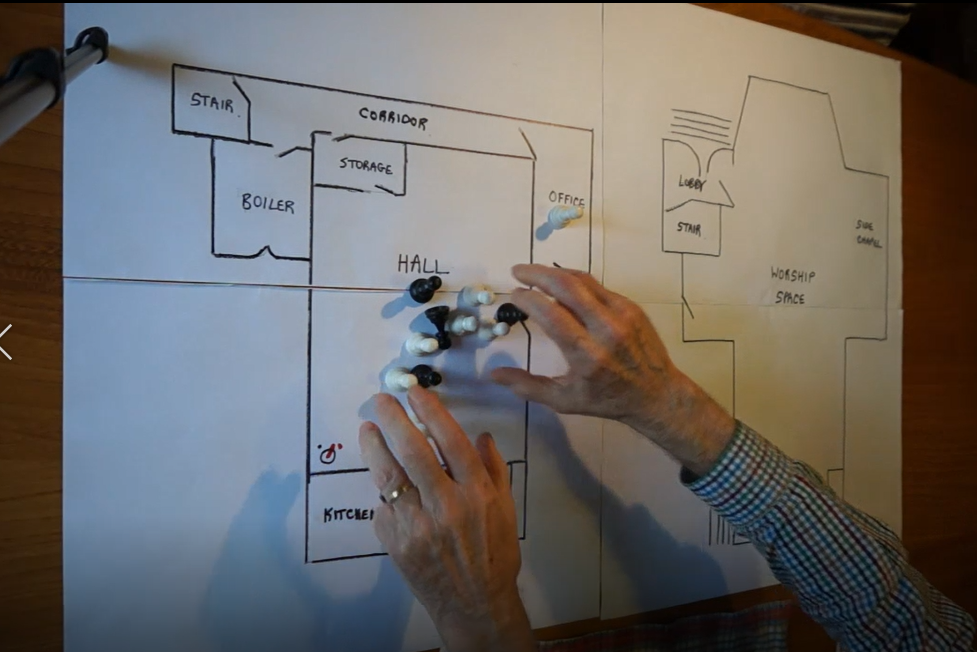

Activity - Mapping Building Use#
This activity works through how the building is used on typical days to help groups think through what experiences are like for their current users, and give them a structure for thinking about what building changes might make under-used spaces more useful for any unmet needs in the local community. We have prepared a video showing the activity because it’s easier than it sounds when we write it down.
{kind=link}
What you need for the activity#
For this activity, you will need:
A large rough drawing of the building’s floorplan. This is easier to produce if you have an architect’s floor plan to start from, but you only need something that indicates the major spaces with entrances and routes to the different spaces. This is harder for some groups than others! Don’t fuss over getting it right. It doesn’t need to be to scale. If you bring a marker pen with you, you can add to it during the session.
Some “game pieces” that you can use to designate groups of different sizes. You could use chess pieces, coins, or whatever else you have to hand. You can either have big pieces mean big groups or just use lots of pieces.
the diary that shows what groups are in the building when over a typical week. If your building use is either very regular or it varies greatly from week to week, you may want to use the actual diary. Many groups use Google Calendar for this - you may be able to arrange for one person to have access to that or to receive an exported copy. Be careful about any personal or sensitive details that these diaries can reveal. For this activity, those aren’t needed, but it is useful to know something about the sizes of the groups and whether the people involved have special heating needs, for instance, because they are children, old, or infirm. We have a diary template that can be used to extract this information so it is easy to use during the session - whether you need it depends on how complicated your building use is.
access to the thermal monitoring data. Once data starts coming in, it will be available here:
If you have been moving the monitor to different places in your buildings, you will also find it useful to have access to the Monitor Location Diary that describes where it was when. Each group stores this separately but it looks like the template here:
the three discussion questions written out for the group leader to remember, or preferably, written out large (or projected) where everyone will be able to see them.
How to run the activity#
For the activity, you use coins or chess pieces to enact a typical week in the life of the building. Small value coins (or pawns) can represent single people or very small groups, mid-value coins (or e.g., knights and rooks) can represent medium-sized groups, and pound coins (or kings and queens) can represent large groups. Start, for instance, early on a Monday morning and step through what happens in the building up until lunchtime, walking groups through the building. What entrances do they use? Where do they go?
As you work through the schedule, there are three questions for the group to consider:
How warm do the spaces need to be? Is anything bad going on?
The engineer might be able to shed some light on this from the thermal monitoring data by looking at whether the space comes to temperature too early or too late, or fluctuates too much. If the temperature fluctuates by more than around 2C, that makes people uncomfortable because they have to keep adjusting how much clothing they are wearing. They might also be able to see sudden temperature rises - which often indicate space heaters - or sudden drops, corresponding to doors being left open.
Is there a better way to make people comfortable?
By “better way to make people comfortable”, we mean methods that might be more effective or more efficient. Remember that the natural response when cold is to turn up the thermostat, and that often doesn’t help, or at least doesn’t help fast enough, especially in community spaces. The correct responses for big temperature fluctuations might be draught lobbies, ventilation that is easier to control, and making the heating gentler by turning down the boiler thermostat, reducing the output of electric heaters, or changing the settings on fan convectors. This might make them run for longer, but more efficiently. It might also mean employing a localised or hybrid heating strategy, for instance, by adding infrared panels in spaces that are used when everything around them is empty.
Could we meet more community needs by making changes?
By “making changes”, we mean changes to the building layout to make spaces configurable or to change the sizes of the spaces you have. It could mean making use of multiple entrances or new corridors to unblock access to spaces. It could also mean considering new facilities like kitchen changes, or changes to things like flooring and seating, to make the space more suitable for new groups coming in. If the building occupancy goes up, this could then change the best heating strategy to use.
If the group is too fixated on one question, you can remind them of the others.
After considering enough different times in the week to make sense of your building’s use, it’s time to think about the big picture. Remind the group of what they learned about localised heating versus space heating, hybrid systems that, for instance, give a low level of background heat and top up with localised solutions, and also about the possibility of reconfiguring the building so it suits community needs better. Go around the room for people to suggest one thing they learned from the exercise that they think should influence future choices, or one action that the group should seriously consider. Record ideas on a flipchart (or projected) and let them flow into a wider discussion, but ensure that everyone gets a chance to contribute, as the best understanding won’t always be from the people most inclined to speak up. You can then photograph the flipchart to remember what was said. We will be revisiting these possible future actions in session 4.
During the exercise, depending on their experience, the engineer may have instincts that some things as not worth considering as they arise. For instance, groups might be tempted to turn off the heating in all rooms but the one being used - that can work, but sometimes it has such a big effect on the building that users can’t be made comfortable. A structural engineer or an engineer who works with architects might have very good instincts about whether opening spaces out, creating mezzanines, and so on is likely. The engineer should guide the group where they feel comfortable to make the best use of the group’s time, but unlike in a professional setting, it’s absolutely fine to not know the answer to a question or to be uncertain about the answer. The goal is to know what questions to ask the professionals.